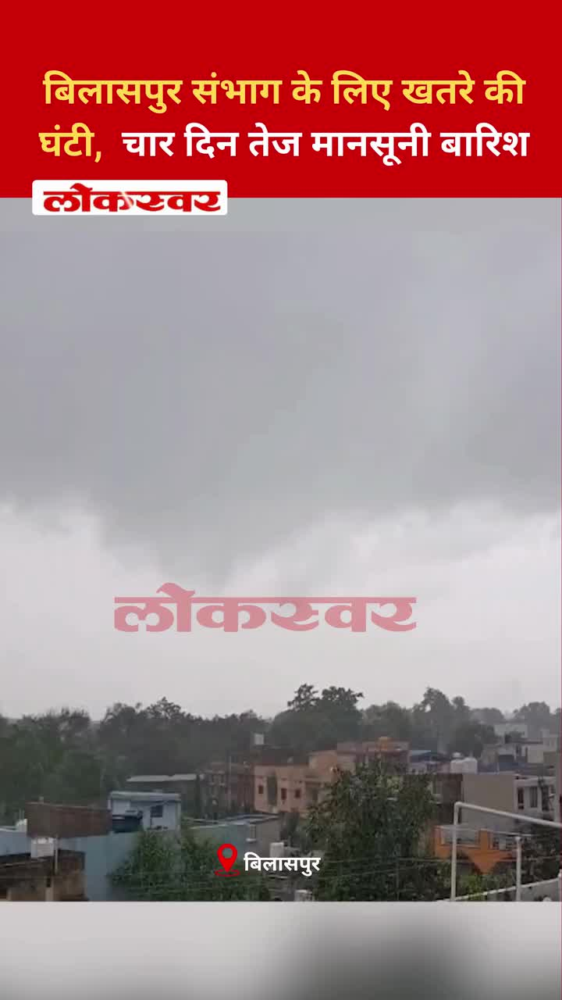
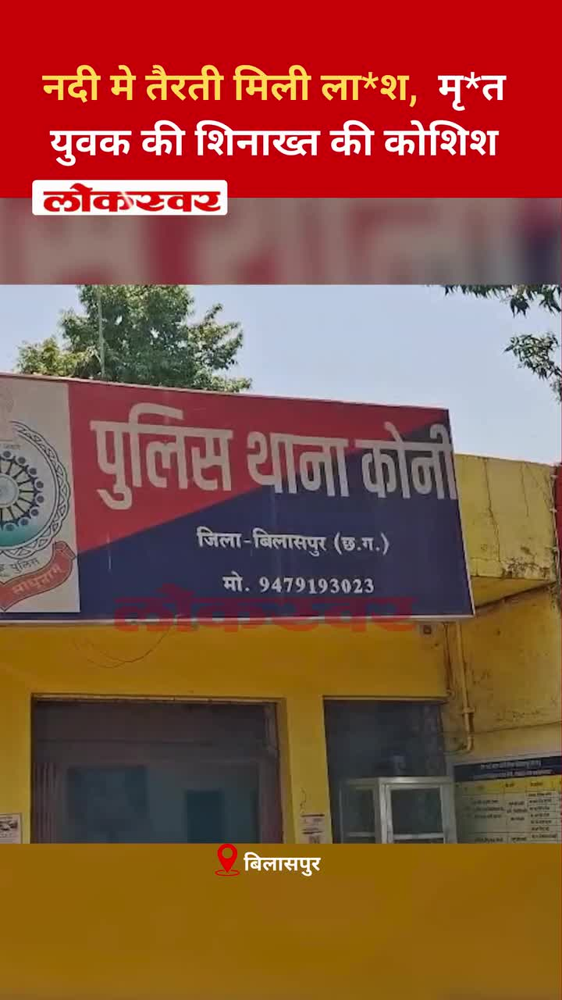
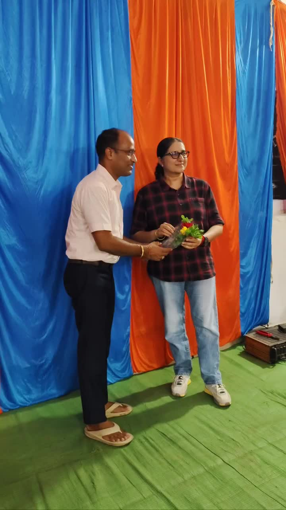
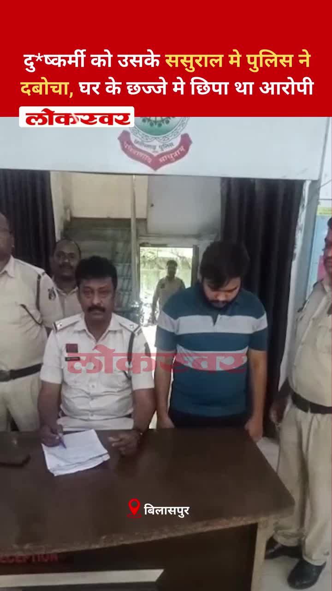
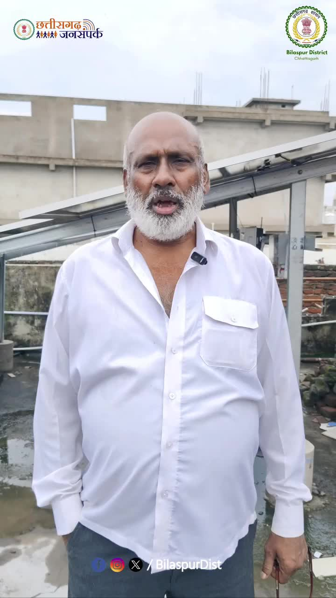

Bilaspur News Hub
3
BUSINESS
3
EDUCATION
4
EVENT
9
GOVERNMENT
1
HEALTH
4
INFRASTRUCTURE
24
INSTAGRAM NEWS
24
NEWS
6
OTHER
7
POLICE
6
SOCIAL
7
YOUTUBE VIDEOS
BUSINESS3

Lokswar · Published: Sun, 26 Ju | Scraped: 2026-07-26 16:54:24
Kanhaiya Gupta, the Confederation of All India Traders' Sarguja division in-charge, completed his visit to Manendragarh. The tour focused on strengthening trader networks and addressing local business issues.

The Hitavada · Scraped: 2026-07-27 09:29:45
US tariff proposals have prompted experts to urge Indian pharma firms to focus on innovation and value‑added products to stay competitive. This could drive R&D investment and reduce reliance on generic exports.
The Hitavada · Scraped: 2026-07-27 09:29:45
Coal India Limited has begun a major mine restoration project, converting abandoned coal pits into forested areas. This initiative aims to restore ecology and fulfill corporate environmental responsibilities.
EDUCATION3

Nai Dunia Bilaspur · Published: Mon, 27 Ju | Scraped: 2026-07-27 05:44:48
The Vyapam exam included questions on Chhattisgarh’s first Ramsar site, the builder of Ramtekri temple, and a difficult mathematics problem. Candidates struggled especially with the math section.

Nai Dunia Bilaspur · Published: Mon, 27 Ju | Scraped: 2026-07-27 05:44:48
RTI filings have uncovered corruption in schools, leading police to summon 47 teachers from Kotta block for questioning. The revelations highlight widespread malpractice in the education system.

The Hitavada · Scraped: 2026-07-27 12:55:28
SFS High School dominated St Michael’s High School, scoring four goals in a decisive victory. The win highlights the school's strong performance in inter‑school football.
EVENT4

The Hitavada · Scraped: 2026-07-27 12:55:28
Sarth claimed the table tennis title by defeating top seed Jayesh in a surprising upset. His victory marks a significant breakthrough in the tournament.

The Hitavada · Scraped: 2026-07-27 12:55:28
Saikrithik has been selected to represent India in international bridge competitions. This appointment highlights his expertise and raises the profile of Indian bridge players.
The Hitavada · Scraped: 2026-07-27 09:29:45
The Madhya Bharat Area headquarters organized a ceremony to commemorate the 27th Kargil Vijay Diwas, honoring the bravery of Indian forces. The event included flag hoisting, speeches, and tributes to martyrs.

G News Bilaspur · Published: 2026-07-27 | Scraped: 2026-07-27 16:26:32
Young students recreated a patriotic tableau commemorating Carghil victory day, showcasing national pride and historical awareness during the event in Bilaspur.
GOVERNMENT9

Lokswar · Published: Sun, 26 Ju | Scraped: 2026-07-26 16:54:24
Congress staged a unique protest in Bodri, with women breaking pots, against alleged theft of donations for the Ayodhya Ram temple. The demonstration highlights concerns over misappropriation of temple funds.

CG Wall · Published: Mon, 27 Ju | Scraped: 2026-07-27 05:44:48
Anurag secured a decisive victory in the District Advocates Association biennial election, winning the president post by 380 votes. The results were declared after counting on Sunday, marking a significant performance for his campaign.

Nai Dunia Bilaspur · Published: Mon, 27 Ju | Scraped: 2026-07-27 09:29:45
Justice Sachin Singh Rajput visited Raigarh's judicial facilities, reviewing the functioning of courts and the district jail. He assessed the infrastructure and procedural arrangements, emphasizing improvements.

Nai Dunia Bilaspur · Published: Mon, 27 Ju | Scraped: 2026-07-27 09:29:45
The Budhwari market saw 682 shopkeepers retain their stalls while 18 face eviction orders after a railway drive. Traders condemned the action as unjust, alleging unfair treatment. The situation highlights tensions between local vendors and railway authorities.

CG Wall · Published: Mon, 27 Ju | Scraped: 2026-07-27 09:29:45
The Revenue Clerks Union condemned the arbitrary arrests in economic assistance cases and staged a collectorate sit-in led by Rohit Tiwari. They warned of further agitation if action not taken. The protest underscores concerns over procedural fairness.
The Hitavada · Scraped: 2026-07-27 09:29:45
Former Uttarakhand Minister Hira Singh Bisht, a senior politician known for development work, has passed away. His death has been mourned by political circles and the public. He served the state in various ministerial roles over the years.

The Hitavada · Scraped: 2026-07-27 05:44:48
A task force headed by Nandan Nilekani will draft a roadmap for exam reforms, announced by the Prime Minister. The initiative aims to address systemic issues and improve fairness in competitive examinations.
District Administration Bilaspur · Published: 2026-07-27 | Scraped: 2026-07-27 09:29:45
The District Administration of Bilaspur has announced a contractual appointment for an Accountant at Bilasa Devi Kevat Airport. Interested candidates can apply as per the prescribed qualifications and deadline.

G News Bilaspur · Published: 2026-07-27 | Scraped: 2026-07-27 16:26:32
The Collector and Police issued warnings about ongoing heavy rains, urging residents to avoid flood‑prone areas and take safety precautions.
HEALTH1

The Hitavada · Scraped: 2026-07-27 09:29:45
A joint inspection team raided the Smart City Hospital, finding violations and sealing the building. The surprise check highlights concerns over compliance and patient safety in the facility.
INFRASTRUCTURE4

The Hitavada · Scraped: 2026-07-27 12:55:28
The city will start free trials of electric buses, with a planned fleet of 245 units to improve public transport. This initiative aims to reduce emissions and provide affordable travel options.
The Hitavada · Scraped: 2026-07-27 09:29:45
The government allocated Rs 2,010 crore to upgrade judicial infrastructure and modernise e‑Courts, speeding up case disposal and improving access to justice. The funding will support technology upgrades and court facilities nationwide.

The Hitavada · Scraped: 2026-07-27 09:29:45
Several major intersections in the city are now in poor condition despite JMC's promises of improvement. Residents complain about potholes and unsafe roads, questioning the civic body's maintenance efforts.

G News Bilaspur · Published: 2026-07-27 | Scraped: 2026-07-27 16:26:32
Untamed cattle roam Bilaspur’s streets, posing hazards to commuters and damaging infrastructure. Authorities struggle to control the animals, leading to accidents and traffic chaos. Residents demand effective management and safety measures.
INSTAGRAM NEWS24

A new post shared by @bilaspur_today_news on Instagram, likely featuring local news updates and community highlights.

Weather alert warns of intense monsoon rains across the Bilaspur division for the next four days. Residents are advised to stay cautious and avoid flood-prone areas.
A young man was assaulted with a stick while riding in an auto, highlighting rising street violence. Police are investigating and urged citizens to report suspicious activity.
Bilaspur and Kota police have arrested six individuals accused of mobile snatching. The operation highlights local law enforcement's focus on curbing theft.
The High Court of Chhattisgarh granted relief to actor-turned-BJP MLA Anuj Sharma amid cyber bullying allegations. The verdict marks a legal win for Sharma.

A dead body was discovered floating in the Arpa River near Koni, prompting police to begin identification efforts. Authorities are investigating the cause of death.

Swachh Bharat Mission emphasizes that cleanliness is key to healthy, prosperous villages. State advisors stress community participation for sustainable hygiene.

Forest officials sealed four sawmills after uncovering a massive wood smuggling operation, causing an estimated loss of crores in revenue. The raid underscores the need for stricter enforcement against illegal logging.
Traffic police in Bilaspur are strictly enforcing speed limits, warning that a few minutes of haste can cost a lifetime. The drive aims to deter reckless driving and reduce accidents.
The clerk association in Bilaspur has issued an ultimatum against an arrest, threatening a massive protest if authorities ignore their demands. The agitation could disrupt government operations.
Authorities in Bilaspur have warned residents against playing in swollen waters, with police imposing penalties and the collector urging caution. The move aims to prevent accidents during the flood.
Congress members in Bodri staged a symbolic protest, carrying a pot representing sin, to condemn the Ram Mandir controversy. The demonstration highlighted their opposition to perceived injustices.
A small car crash on Marine Drive in Raipur triggered a major traffic jam and road rage incident. Police are working to clear the blockage and manage the crowd.
A young man drowned while on a picnic at Kharun River in Durg district. The SDRF team recovered his body after a search operation. The incident has raised concerns about safety at popular outing spots.

Police apprehended a rape accused hiding on a balcony at his in‑law's residence in Bila. The arrest follows investigation into the sexual assault case. Authorities are reviewing security measures at residential areas.

Under the PM Surya Ghar Yojana, Mr. Sahu's residence in Bilaspur now runs on solar power, reducing electricity costs. The installation, costing ₹1.08 lakh, is part of the government's renewable energy push. Residents praise the initiative for sustainable lighting.
This appears to be a generic post from the Bilaspur District Instagram account with no detailed news. It likely serves as a placeholder or routine update for followers. Readers are advised to check other sources for current information.

A generic Instagram update from @bilaspur_today_news, likely sharing local news or community content.
NEWS24
.jpg)
Nai Dunia Bilaspur · Published: Sun, 26 Ju | Scraped: 2026-07-26 16:54:24
<img src="https://img.naidunia.com/naidunia/ndnimg/26072026/26_07_2026-social_media_content_against_mla_anuj_sharma_(1).jpg" />कोर्ट ने संबंधित सोशल मीडिया प्लेटफॉर्म, अकाउंट संचालकों और कंटेंट क्रिएटर्स को नोटिस जारी कर जवाब भी मांगा है।

Nai Dunia Bilaspur · Published: Sun, 26 Ju | Scraped: 2026-07-26 16:54:24
<img src="https://img.naidunia.com/naidunia/ndnimg/26072026/26_07_2026-bilaspur_high_court_26july.jpg" />अदालत ने माना कि वैधानिक प्रविधान के अभाव में कर देनदारी स्वतः कानूनी वारिसों पर स्थानांतरित नहीं की जा सकती।

Nai Dunia Bilaspur · Published: Sun, 26 Ju | Scraped: 2026-07-26 16:54:24
<img src="https://img.naidunia.com/naidunia/ndnimg/26072026/26_07_2026-government_education_system.jpg" />विकासखंड ओड़गी के ग्राम पंचायत कर्री में सरकारी शिक्षा व्यवस्था की बदहाल तस्वीर सामने आई है। प्राथमिक एवं माध्यमिक विद्यालय में कुल नौ शिक्षक पदस्थ हैं, लेकिन शनिवार को केवल एक शिक्षक ही विद्याल

CG Wall · Published: Sun, 26 Ju | Scraped: 2026-07-26 16:54:24
बिलासपुर… सोशल मीडिया पर तेजी से वायरल हुई ‘5 करोड़ रुपये की चोरी’ की खबर आखिरकार अफवाह साबित हुई। बिलासपुर पुलिस ने एफआईआर दर्ज होने के कुछ ही घंटों के भीतर मामले का खुलासा करते हुए तीन विधि से संघर्षरत बालकों को अभिरक्षा में लिया और उनके कब्जे से चोरी गया अधिकांश मशरूका बरामद कर

CG Wall · Published: Sun, 26 Ju | Scraped: 2026-07-26 16:54:24
रायगढ़… छत्तीसगढ़ उच्च न्यायालय के न्यायाधीश एवं रायगढ़ जिले के पोर्टफोलियो जज जस्टिस सचिन सिंह राजपूत ने दो दिवसीय दौरे के दौरान जिले के न्यायालयों और जिला जेल का वार्षिक निरीक्षण किया। निरीक्षण के दौरान उन्होंने न्यायिक कार्यप्रणाली, न्यायालयीन व्यवस्थाओं और बंदियों को उपलब्ध कराई जा रही सुव

Nai Dunia Bilaspur · Published: Mon, 27 Ju | Scraped: 2026-07-27 12:55:28
<img src="https://img.naidunia.com/naidunia/ndnimg/27072026/27_07_2026-khuntakhaat.jpg" />रविवार को सुहाने मौसम और फुहारों के बीच बिलासपुर के कोटा और खूंटाघाट बांध पर सैलानियों की भारी भीड़ उमड़ी। लोगों ने प्राकृतिक दृश्यों का आनंद लिया और सोशल मीडिया पर तस्वीरें साझा कीं। वहीं, मौसम विभाग ने आज से

CG Wall · Published: Mon, 27 Ju | Scraped: 2026-07-27 12:55:28
बिलासपुर…बरसात के मौसम में कानून-व्यवस्था और जनसुरक्षा को सर्वोच्च प्राथमिकता देते हुए पुलिस अधीक्षक रजनेश सिंह ने सोमवार को पुलिस अधीक्षक कार्यालय परिसर में पुलिस जवानों के बीच रेनकोट का वितरण किया। इस दौरान उन्होंने स्वयं कई जवानों को रेनकोट पहनाकर उनका उत्साहवर्धन किया और कहा कि बारिश हो या

CG Wall · Published: Mon, 27 Ju | Scraped: 2026-07-27 12:55:28
बिलासपुर… नगर निगम की मेयर-इन-काउंसिल (MIC) की बैठक में निगम के अभियंताओं के लिए कथित तौर पर “मक्कार” शब्द का इस्तेमाल किए जाने का विवाद अब तूल पकड़ने लगा है। सोमवार को मुख्य अभियंता राजकुमार मिश्रा के नेतृत्व में नगर निगम के अभियंताओं ने कलेक्टोरेट का घेराव किया और महापौर व नगर नि

CG Wall · Published: Mon, 27 Ju | Scraped: 2026-07-27 12:55:28
बिलासपुर… अयोध्या स्थित श्रीराम मंदिर में हुई चोरी की घटना के विरोध और भगवान श्रीराम के प्रति श्रद्धा प्रकट करने के उद्देश्य से निकाली जा रही ‘श्रीराम श्रद्धा आस्था यात्रा’ के दूसरे दिन रविवार को शहर और आसपास के ग्रामीण क्षेत्रों में धार्मिक उत्साह का माहौल दिखाई दिया। आयोजकों के अ

Lokswar · Published: Mon, 27 Ju | Scraped: 2026-07-27 12:55:28
<p>(अजय श्रीवास्तव) : छत्तीसगढ़ में वन विभाग और लकड़ी कारोबारियों की कथित मिलीभगत का बड़ा मामला सामने आया है। आरोप है कि नेशनल हाईवे निर्माण के लिए अवैध रूप से काटी गई इमारती और प्रतिबंधित साल की लकड़ियों को कोरबा से रायपुर जिले के अभनपुर लाकर आरा मिलों में खपाया जा रहा था। प्रधान मुख्य …</p>

CG Wall · Published: Mon, 27 Ju | Scraped: 2026-07-27 16:26:31
बिलासपुर…छत्तीसगढ़ उच्च न्यायालय ने वर्ष 2026 में न्यायिक कार्यप्रणाली के क्षेत्र में एक उल्लेखनीय उपलब्धि हासिल की है। मुख्य न्यायाधीश न्यायमूर्ति रमेश सिन्हा के नेतृत्व और सतत निगरानी में उच्च न्यायालय ने न केवल नए मामलों का तेजी से निपटारा किया, बल्कि पुराने लंबित प्रकरणों को भी रिकॉर्ड गति

CG Wall · Published: Mon, 27 Ju | Scraped: 2026-07-27 16:26:31
बिलासपुर… शादी का झांसा देकर युवती का लंबे समय तक दैहिक शोषण करने और बाद में दूसरी शादी कर फरार हुए आरोपी को सिरगिट्टी पुलिस ने आखिरकार गिरफ्तार कर लिया। पुलिस से बचने के लिए लगातार ठिकाने बदल रहा आरोपी अपने ससुराल में छज्जे पर छिपा मिला, जहां से उसे दबोच लिया गया। पुलिस के अनुसार, …

CG Wall · Published: Mon, 27 Ju | Scraped: 2026-07-27 16:26:31
बिलासपुर। शराब पीने के लिए पैसे मांगना और इनकार करने पर चाकू की नोक पर लूट करना एक युवक को महंगा पड़ गया। सिटी कोतवाली पुलिस ने त्वरित कार्रवाई करते हुए वारदात के कुछ ही घंटों में आरोपी को गिरफ्तार कर उसके कब्जे से घटना में प्रयुक्त चाकू और लूटी गई नगदी बरामद कर ली। …
Lokswar · Published: Mon, 27 Ju | Scraped: 2026-07-27 16:26:31
<p>(जयेन्द्र गोले) : बिलासपुर – विश्व हेपेटाइटिस दिवस के अवसर पर बिलासपुर में राष्ट्रीय वायरल हेपेटाइटिस नियंत्रण कार्यक्रम (NVHCP) के तहत जिला सर्विलेंस इकाई (IDSP), मुख्य चिकित्सा एवं स्वास्थ्य अधिकारी कार्यालय तथा नगर निगम बिलासपुर के संयुक्त तत्वावधान में हेपेटाइटिस जांच एवं टीकाकरण शिविर
Lokswar · Published: Mon, 27 Ju | Scraped: 2026-07-27 16:26:32
<p>(धीरेन्द्र मेहता) : बिलासपुर – बिल्हा विकासखंड के ग्रामीण क्षेत्रों में झोलाछाप डॉक्टरों का अवैध इलाज एक बार फिर चिंता का विषय बन गया है। मोहदा ग्राम पंचायत सहित आसपास के गांवों में बिना मान्यता और वैध चिकित्सकीय डिग्री के कई लोग मरीजों का उपचार कर रहे हैं। ग्रामीणों का आरोप है कि इनकी गतिव
Lokswar · Published: Mon, 27 Ju | Scraped: 2026-07-27 16:26:32
<p>(भूपेंद्र सिंह राठौर) : बिलासपुर – छग प्रदेश राजस्व लिपिक संघ ने सरकंडा थाना पुलिस की कार्रवाई पर गंभीर सवाल उठाते हुए आरोप लगाया है। इसे एकतरफा कार्रवाई बताते हुए संभागायुक्त, आईजी और कलेक्टर को ज्ञापन सौंपकर निष्पक्ष जांच की मांग की है। साथ ही कहा है मांगों पर जल्द निर्णय नहीं लिया गया तो

Lokswar · Published: Mon, 27 Ju | Scraped: 2026-07-27 16:26:32
<p>(भूपेंद्र सिंह राठौर) : बिलासपुर – ट्रैफिक पुलिस के जवान हर मौसम में सड़क पर खड़े होकर शहर की यातायात व्यवस्था संभालते हैं। ऐसे में बारिश के दौरान उनकी ड्यूटी आसान बनाने के लिए पुलिस विभाग ने पहल की है। वरिष्ठ पुलिस अधीक्षक रजनेश सिंह ने ट्रैफिक जवानों को रेनकोट वितरित किए।बारिश मे भी ट्रैफ
The Hitavada · Scraped: 2026-07-27 16:26:31
The Hitavada · Scraped: 2026-07-27 12:55:28
The Hitavada · Scraped: 2026-07-27 12:55:28
OTHER6
Lokswar · Published: Mon, 27 Ju | Scraped: 2026-07-27 09:29:45
Meteorological department issued a red alert due to intense monsoon activity. Heavy rainfall is expected across Chhattisgarh for the next four days, risking floods and travel disruptions.
The Hitavada · Scraped: 2026-07-27 09:29:45
Rishikanta, a weightlifter, secured a silver medal in the Commonwealth Games, marking a historic achievement for his nation. His performance was praised for its consistency and determination.
BREAKINGMirabai wins hat-trick of golds at CWG / मीराबाई ने लगातार तीसरी बार CWG में स्वर्ण पदक जीता
The Hitavada · Scraped: 2026-07-27 09:29:45
Mirabai Chanu delivered a spectacular performance, winning three consecutive gold medals at the Commonwealth Games, showcasing her dominance in weightlifting. Her achievements have inspired many athletes across India.
BREAKINGAnahat crowned world junior squash champion / अनहात को विश्व जूनियर स्क्वैश चैंपियन का खिताब मिला
The Hitavada · Scraped: 2026-07-27 09:29:45
Anahat secured the world junior squash championship title, marking a historic win for Indian squash. His victory highlights the growing talent in the sport and sets new benchmarks.
The Hitavada · Scraped: 2026-07-27 09:29:45
An oil tanker detonated after hitting a naval mine in the Strait of Hormuz, causing a massive fire and potential environmental hazard. Authorities are investigating amid heightened regional tensions.

G News Bilaspur · Published: 2026-07-27 | Scraped: 2026-07-27 16:26:32
This entry seems to be a placeholder for prime news on July 27. No specific details are provided. It likely marks a scheduled news segment.
POLICE7

CG Wall · Published: Mon, 27 Ju | Scraped: 2026-07-27 05:44:48
A 25‑year‑old attack victim died despite years of legal battle, prompting the Chhattisgarh High Court to stress that punishments must instill fear of law in criminals. The court emphasized stronger deterrence.

CG Wall · Published: Mon, 27 Ju | Scraped: 2026-07-27 05:44:48
Kota police arrested a gang that snatched mobiles by pretending to make emergency calls. The culprits posed as needing to call for help, then grabbed victims' phones. The operation highlights rising mobile theft concerns.

CG Wall · Published: Mon, 27 Ju | Scraped: 2026-07-27 05:44:48
Police launched a major operation against anti-social elements, arresting 10 gangsters including Deepak Sahu. The accused were presented in court as part of ongoing law and order drives. The action aims to curb criminal activities in the district.

Nai Dunia Bilaspur · Published: Mon, 27 Ju | Scraped: 2026-07-27 09:29:45
Police apprehended six criminals who lured victims by offering help before robbing them. The accused were caught and their mobile phone and motorcycle seized. The case highlights increased vigilance against street fraud.

BREAKINGAttack on sleeping family kills woman, injures two / सोते परिवार पर हमला, महिला की मौत, दो घायल
Lokswar · Published: Mon, 27 Ju | Scraped: 2026-07-27 12:55:28
A violent assault on a sleeping family in Korba's Harraadih village left a woman dead and two others critically injured. Police have registered a case and are investigating the motive.

Lokswar · Published: Mon, 27 Ju | Scraped: 2026-07-27 12:55:28
The corpse of an unidentified man was discovered floating in the Arpa river near Samriddhi Vihar in Bilaspur. Authorities have launched a probe to identify the victim and determine the cause of death.

The Hitavada · Scraped: 2026-07-27 12:55:28
Police report that ten individuals, some of them minors, have gone missing in the city over the past day. Authorities are conducting searches and appealing for public assistance to locate them.
SOCIAL6

9th-grade girl breaks tradition, travels to Prayagraj for father's last wish pindadaan / पिता की अंतिम इच्छा पूरी करने 9वीं की छात्रा ने परंपरा तोड़ी, प्रयागराज पहुँची और पिंडदान किया
Nai Dunia Bilaspur · Published: Mon, 27 Ju | Scraped: 2026-07-27 05:44:48
A ninth‑class student traveled to Prayagraj to perform a pindadaan ritual, fulfilling her father’s last wish and breaking local tradition. The act reflects personal devotion over customary norms.
Parsada in Bilaspur resonates with 'Mann Ki Baat' message / बिलासपुर के परसदा में गूंजा ‘मन की बात’ का संदेश
Lokswar · Published: Mon, 27 Ju | Scraped: 2026-07-27 09:29:45
The 'Mann Ki Baat' program was aired in Parsada, Bilaspur, inspiring local residents. The event highlighted community engagement with national initiatives. Residents expressed appreciation for the motivational content.
Picnic goer drowns in Kharun river, SDRF recovers body / पिकनिक मनाने गया युवक खारून नदी में बहा, SDRF ने शव बरामद किया
Lokswar · Published: Mon, 27 Ju | Scraped: 2026-07-27 09:29:45
A 22-year-old youth died after being swept away in the Kharun river while on a picnic in Amleswar, Durg. The SDRF team recovered his body after a rescue operation. The tragedy highlights the dangers of river swimming during outings.
Daughter performs father's last rites in Prayagraj / बेटी ने प्रयागराज में पिता का पिंडदान किया
Lokswar · Published: Mon, 27 Ju | Scraped: 2026-07-27 12:55:28
A daughter from Nagoi village in Bilaspur performed the traditional pindadaan for her father in Prayagraj, reflecting deep cultural values and filial piety.
Ayodhya Ram Temple to train and certify Hindu priests / अयोध्या राम मंदिर हिंदू पुजारियों को प्रशिक्षित और प्रमाणित करेगा
The Hitavada · Scraped: 2026-07-27 09:29:45
Ayodhya Ram Temple will train and certify Hindu priests to standardize rituals and ensure qualified clergy. The program aims to improve religious practices and provide structured education for temple servants, reflecting the temple’s cultural outreach.

Class 9 student honors father's wish with pindadaan in Prayagraj / पिता की इच्छा पूरी करने प्रयागराज में पिंडदान
G News Bilaspur · Published: 2026-07-27 | Scraped: 2026-07-27 16:26:32
A ninth‑grade girl traveled to Prayagraj to perform the pindadaan ritual, fulfilling her father’s final wish. The act reflects the deep cultural importance of funeral rites in Indian families.
YOUTUBE VIDEOS7
The District Advocates Association election saw high voter turnout, with Bajpayee emerging victorious. The result reflects active participation of legal professionals in the region's democratic process.


This final news bulletin provides the latest updates for Bilaspur on the morning of 27 July 2026. It covers key developments and announcements affecting the region.


GRAND NEWS BILASPUR : EVENING FINAL NEWS 27.07.2026 NEWS @News18MPChhattisgarh @IBC24InNews @ZeeNews ...


GRAND NEWS BILASPUR:शहर में आवारा कुत्तों का खौफ करोड़ों का खर्च .


Heavy rainfall has prompted the Bilaspur administration to issue an alert. The warning aims to ensure public safety and preparedness. Residents are advised to take precautions.


A young woman from Takhtpur broke away from age‑old customs, challenging traditional norms. Her act has sparked discussions about gender roles and inspired others to reconsider outdated practices.


The clerk union staged a demonstration against perceived unilateral police actions. They demanded fair treatment and accountability from law enforcement. The protest highlights tensions between staff and police.